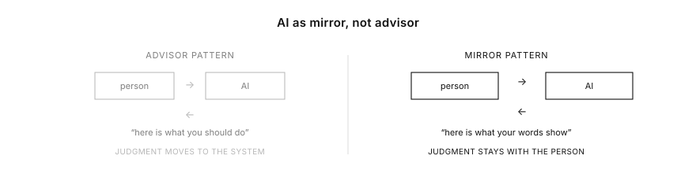
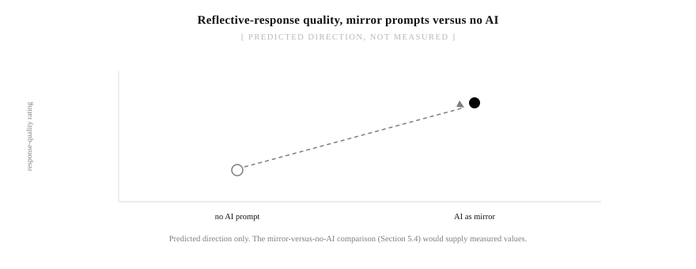

1. Introduction
Ask a senior in college to tell you about themselves and you typically get one of two things: a chronological list of everything they have done, in the order they did it, or a rehearsed script that sounds like every other senior’s script. Neither works. The list is too long and has no center. The script has no life in it. Both miss the point, which is to say something true about who the student is and what drives them, in a way that lands with the person they are speaking to.
By the senior year, most students have plenty of experience. What they are missing is method. Nobody has taught these students how to look at their experience, find the thread running through it, and compress it into something clear enough to defend in conversation. Career services typically gives them resume templates and interview scripts. What they need is the operation that precedes the resume and the script: figuring out what their story is, before they try to tell it.
This paper documents Narrative by Design (NBD), a 90-minute facilitated workshop built around one core operation: narrative compression. Students start with a messy unfiltered paragraph about who they are. They cut it to a sentence. They cut the sentence to a single word. Each compression is a forced choice. What the student keeps and what they discard tells them, often uncomfortably, what they consider central. The compressed word is not a brand or a permanent label; it is a decision tool, a temporary center the student can use to evaluate subsequent opportunities.
The compression operation does not stand alone. The workshop pairs it with three card-sort instruments (values, strengths, skills) and an AI-assisted mirror layer that reads the student’s outputs across all four operations and surfaces gaps the student would not surface alone. The three layers function together: the compression produces an articulated direction, the card sorts produce evidence, and the AI surfaces the discrepancy, which is where the developmental work happens.
The argument here is about design choice. It does not report measured outcomes, and the empirical work that would test the design moves is named in Section 5.4 as the agenda the workshop opens.
The paper proceeds as follows. Section 2 develops the theoretical background across four literatures: narrative identity theory, expressive writing as developmental mechanism, the productive-gap mechanism in adult learning, and the emerging literature on generative AI in education. Section 3 describes the design-based research methodology that frames the work. Section 4 describes the workshop in detail. Section 5 discusses what the design move implies, what its limitations are, and what research lines it opens.
This paper makes three contributions. First, it specifies a design stance, AI as mirror, not advisor: the workshop’s AI layer surfaces patterns in the student’s own material and stops there, rather than recommending what to do, and the paper draws the line precisely (surfacing evidence versus prescribing meaning) and names the failure mode when it is crossed. Second, it presents the 90-minute compression format (paragraph to sentence to word, triangulated by card sorts) as a forcing function that exposes which design moves carry the reflective work. Third, it specifies the empirical agenda the workshop opens (Section 5.4), stating what evidence would confirm or disconfirm the mirror-versus-advisor design claim. The contribution is a design rationale and research agenda; this paper reports the facilitator’s observations from pilot runs, not measured study outcomes, and Section 5.3 is explicit about what therefore remains undemonstrated.
2. Theoretical Background
2.1 Narrative Identity as the Developmental Frame
Dan McAdams’s narrative identity theory (McAdams, 1993, 2001) treats identity as the story a person constructs and continuously edits about who they are, where they have come from, and where they are going. The implication for a tool that supports career thinking is direct: the tool is, in part, a tool that supports the editing of a story. McAdams’s research program has documented, across a substantial empirical literature, that narrative identity becomes more coherent and more reflective across young-adult development, and that the development is itself shaped by the contexts in which the narrating happens. Planned happenstance learning theory (Mitchell, Levin, & Krumboltz, 1999) adds a career-development angle: unplanned events become part of a career when the person works them into a direction, and the NBD workshop is a compressed version of that narrative work.
NBD’s design treats this empirical regularity as a design opportunity. The workshop is, in McAdams’s terms, a narrating context, a structured setting in which the student is required to put their identity into language and to revise it under constraint. The constraint is the design instrument. A student left to narrate in unbounded time and space will produce material that is true and unspecific. A student required to narrate within ninety minutes, to compress to a sentence and then to a word, and to defend the word in a small group, will produce material that is more specific because the format does not allow the abstractions that would otherwise paper over the specifics.
The compression operation also engages McAdams’s distinction between the episodic level of narrative (specific remembered events) and the thematic level (the patterns the events instantiate). The first phase of NBD (the free-form paragraph) operates at the episodic level: students write about specific things they have done. The compression operation forces the move to the thematic level: which patterns do these episodes instantiate, and which pattern is central? The compression stages the episodic-to-thematic move that McAdams treats as central to narrative identity development.
2.2 Expressive Writing as Developmental Mechanism
James Pennebaker’s (1997) research program on expressive writing provides the second theoretical anchor. Pennebaker and his collaborators demonstrated, across many empirical studies in many populations, that structured writing about emotionally significant experiences produces measurable cognitive, affective, and even physical benefits. The benefit comes from the act of writing rather than from the text, which is sometimes discarded. The act of putting an experience into language appears to do work that thinking-without-writing does not.
The Pennebaker tradition is methodologically rigorous in ways the broader self-help literature on journaling is not. The original studies used randomized experimental designs, established baselines, and measured outcomes that could be independently verified (immune-system markers, doctor visits, academic performance). The convergent finding across these studies is that the writing has to be of a particular kind: about something the writer has to think through, sustained for long enough that the surface formulation has time to give way to something deeper, and done multiple times rather than once.
NBD’s design borrows the Pennebaker mechanism but adapts the conditions. The workshop is single-session rather than the multi-session structure Pennebaker’s original studies used, on the practical ground that a single 90-minute session is what institutional career-services contexts can accommodate. The compression-then-card-sort-then-mirror structure substitutes for the multi-session iteration that Pennebaker’s original design provided. The design bet is that the within-session structure can do some of the work that across-session repetition does in Pennebaker’s studies; the bet is empirically open and is named explicitly in Section 5.4.
2.3 Productive Gaps as a Design Target
Jack Mezirow’s transformative-learning theory (Mezirow, 1997) provides a related theoretical anchor, although one I use with explicit caveats. Mezirow argued that significant adult learning is transformative, triggered by what he called a disorienting dilemma, in which the learner’s existing frames of reference fail to account for an experience and must be revised. I do not claim that NBD produces disorienting dilemmas in the canonical Mezirovian sense; Mezirow reserved that term for life-event-magnitude ruptures (job loss, divorce, illness, encounter with profound otherness) that a 90-minute workshop cannot produce. The smaller-scale phenomenon NBD is designed to engineer is better named a productive gap: the cognitively useful disagreement between a learner’s articulated self-description and the evidence the learner has just produced about themselves.
NBD’s sequence asks students to put their reasoning into words and then set those words beside other evidence. The protocol-analysis tradition (Ericsson & Simon, 1993) treats verbal reports as data that can be examined; it does not claim that putting reasoning into words changes the reasoning itself, and this paper does not rely on such a claim.
The NBD workshop is engineered to produce a particular kind of productive gap. The student writes a paragraph that names what they think is central to themselves; they complete three card sorts that name what their evidence shows is central; and the AI mirror surfaces the gap between the two. The student who said “I value collaboration” but ranked individual recognition above teamwork in the values sort has been given a productive gap. The gap is the design feature. A workshop in which the AI mirror confirmed the student’s stated values would do less developmental work than one in which it productively contradicts them.
The mirror metaphor is important. The AI is not a judge; it does not tell the student which version (the stated one or the evidence one) is correct. The AI surfaces the gap. The student is required to do the resolution work themselves, in the company of their peers, within the session. This design move (described in detail in §4.3) is the deliberate non-substitution of human judgment by machine output, even in cases where machine output could plausibly be produced.
2.4 Generative AI as Scaffolding in Education
The literature on generative AI in education is recent and rapidly evolving. Ethan and Lilach Mollick’s (2023) Assigning AI paper provides one of the more useful practitioner-facing typologies, identifying seven distinct roles AI can play in instructional settings (tutor, coach, mentor, teammate, tool, simulator, student). The typology is useful because it shows that “use AI in education” is a set of choices about which role the AI plays in the learning interaction.
The NBD design occupies the mirror position, which is not one of Mollick’s seven roles but is closest to coach: the AI surfaces patterns in what the student has produced but does not direct the student’s response to those patterns. The position is not standard in commercial educational AI; most deployed systems occupy the tutor or tool positions, in which the AI tells the student what to think or do something on behalf of the student. The mirror position requires more from the student, because the student must do the interpretation and response work that a tutor would do for them, and it requires more from the AI design, because the system must produce observations that are accurate and uncomfortable without becoming prescriptive.
The most directly comparable contemporary work in this design space is Van Doren, Cai, Han, Ma, Nguyen, and Ahn’s (2024) Careergram, presented at the International Conference of the Learning Sciences. Careergram is an AI-assisted reflection tool that prompts undergraduate students to articulate their occupational identities and then to bring the AI-surfaced reflections into structured conversations with their research mentors. The design move is theoretically aligned with NBD’s: the AI supports the student’s reflection and feeds the conversation with a human mentor without taking the mentor’s place (Van Doren et al., 2024). The contribution NBD makes against this prior work is in the workshop format (90 minutes rather than a year-long fellowship program), in the compression-and-triangulation operations (paragraph-to-word compression and three-card-sort instruments rather than open-ended reflection prompts), and in the synchronous peer-witness context (dyadic conversation rather than mentor-mentee). The two designs share the underlying mirror-not-advisor commitment and are best read as complementary tests of the same broader design move in different time-and-relational structures.
The literature on generative AI in education has, in parallel with the practitioner-facing work, developed a critical strand I engage with less directly here. Neil Selwyn (2019) and Ben Williamson (2017), among others, have argued that the integration of AI into educational settings tends to reproduce and amplify existing power asymmetries between institutions and learners, often under a rhetoric of personalization or efficiency. The mirror design move is a partial response to that critique, in that it explicitly refuses the advisor and judge positions that import institutional authority into the learner-AI interaction. I do not claim the mirror position resolves the broader critique; the critique applies to any AI integration including this one, and I treat it as a constraint on the design rather than as a problem the design has solved.
Put briefly, the advisor position would take over judgment in a context where the developmental work depends on the student’s own; the mirror position leaves that judgment with the student and gives it better evidence to work with.
3. Method: Design Rationale and Scope
Scope and method. This paper documents the workshop’s design rationale and intended operations. The workshop was delivered in facilitator-led prototype runs by the author at Dartmouth until September 2026; the artifacts and outputs described below are illustrative of the intended workshop structure rather than data from a formally collected human-subjects study. No IRB-reviewed protocol was in place; observations are the author’s own program notes, not research data. The open research lines in §5.4 describe the empirical studies that would require such infrastructure.
NBD is positioned within the design-based research tradition (Brown, 1992; Design-Based Research Collective, 2003) as a design account. The workshop was an instructional event, and its revisions came from the facilitator’s own notes. Studying whether the workshop’s design moves work as intended would be future work. Before any student artifact (the paragraph, the sentence, the word, the card-sort outputs, the AI mirror’s surfaced gaps, or the student’s response to them) is kept or analyzed, such a study would need IRB approval, informed consent, and a data-retention plan, and students would need a way to take the workshop without taking part in the study.
The methodology has limits the empirical follow-on work will need to address. The workshop population would be self-selecting (students who opt into the workshop), and any future consenting subpopulation may differ from the full workshop population in ways that would need to be addressed at the study-design stage. The within-workshop measurement implied by the design is qualitative rather than quantitative; outcome metrics on conventional career-services scales (placement, time-to-employment) are not directly produced by the workshop format. These limits are described in Section 5.3.
4. The Narrative by Design Workshop


4.1 The Compression Sequence
The first operation in the workshop is the compression sequence (Figures 1 and 2). The student writes, in five minutes, an unfiltered paragraph about who they are. The instruction is permissive: there is no expected form, no length minimum, no expectation that the paragraph will be coherent. The paragraph is the raw material.

The student then has five minutes to compress the paragraph to a single sentence. The compression is required to retain what the student considers the central claim of the paragraph; the discarded material is, by the student’s own act of discarding, identified as peripheral. The student then has five minutes to compress the sentence to a single word. The word is required to defend itself, in the next operation, against the student’s own evidence and against peer questioning.
Each step in the compression strips out material. The stripped-out material is informative: a student who discards “I love teaching” in the compression from paragraph to sentence has told themselves something they could not have told themselves without the compression. The same design move recurs across the author’s projects, and the NBD workshop is its most explicit instance (see also the author’s field note Compression as a method).
4.2 The Three Card-Sort Instruments
While the compression sequence is producing the student’s articulated direction, the card-sort instruments are producing parallel evidence. The workshop uses three sorts: Knowdell Career Values (40 cards naming core work values), a sort of strength themes drawn from the CliftonStrengths instrument, and Motivated Skills (skills the student is energized by, regardless of whether they are currently good at them). I note in passing that the CliftonStrengths instrument has a contested psychometric reputation (the published reliability and construct-validity evidence is weaker than Gallup’s marketing materials suggest); I use it in NBD as an exploratory sort rather than as a diagnostic instrument, and the design does not depend on the underlying psychometrics holding up to the standard a clinical assessment would require. Students complete each sort progressively (top 20, top 10, top 5, top 3), with the successive compression itself serving as material for the student’s reflection.
The card-sort tradition is methodologically grounded in the knowledge-elicitation literature (Rugg & McGeorge, 1997) and in the long tradition of vocational assessment that has used sort instruments since the early 20th century. The specific instruments NBD uses are commercial (Knowdell, CliftonStrengths) or established (Motivated Skills); the workshop’s contribution is not the sorts themselves but the triangulation of three sorts that produce evidence in three different registers (values, strengths, skills).
A single sort produces a result the student can rationalize. Three sorts produce a configuration the student cannot rationalize as easily, because the configuration constrains itself. A student whose top values include collaboration, whose top strengths include independent analysis, and whose top motivated skills include solo synthesis has produced a configuration the student must explain, and the explaining is part of the developmental work.
4.3 The AI-Mirror Layer
After the compression sequence and the card sorts are complete, the AI mirror reads the student’s outputs across all four operations and surfaces the gaps. A representative output, illustrative of the intended prompt-design format: Your paragraph emphasized X. Your sentence retained Y. Your word foregrounded Z. Your values sort prioritized A. Your strengths sort prioritized B. Your motivated-skills sort prioritized C. The strongest pattern across the four operations is D. The strongest tension is between E and F.
The mirror neither recommends nor interprets; it surfaces the configuration and names the strongest tensions. The student is required to do the interpretation work, in the next phase of the workshop, with their peer pair. My design wager is that the surfaced tensions are the developmental opportunity: the student who is told their stated values and their evidenced values disagree has been handed a productive gap that the workshop’s remaining time is structured to support them in working on.
The mirror layer used Dartmouth Chat, Dartmouth’s institutionally provided AI platform, through its API; student text was analyzed only there. I used ChatGPT and Claude Code to build the companion web app and draft prompts, never with student text. The prompts were constrained to produce observations rather than recommendations. The prompts were written explicitly to prohibit the model from saying things like “you should consider careers in X” or “your real value is Y.” The model was required to say things like “the strongest pattern is X” and “the strongest tension is between A and B.” This constraint was harder to enforce than it sounds; the model’s default behavior is to advise, and most of the prompt-engineering work was preventing it from doing so.
4.4 The 90-Minute Constraint as Design Instrument
The workshop’s 90-minute time budget is a deliberate design choice. Three effects depend on the constraint. First, compression forces choices the student would not make if given more time; given two hours, students elaborate, and the developmental work the compression is designed to produce does not happen. Second, the format requires a witness; a 90-minute solo workshop is just journaling, and the format only produces compression-with-witness when the time budget makes solo elaboration impossible. Third, the workshop has to be cheap-to-fail; the student needs to know that doing the workshop badly is recoverable, and a 90-minute exercise is recoverable in a way a multi-week program is not.
See also the author’s field note The 90-minute constraint, which develops this argument at greater length. One concern it raises is that scheduling constraints in institutional career-services contexts press a workshop like this to expand its time budget, and that the expansion would change what the workshop produces.
- The design predicts higher reflective-response quality with the AI-as-mirror layer than without any AI prompt. How to measure: rate student artifacts on a response-quality rubric; compare mirror, no-AI, and (optionally) a recommender condition.
- The design intends the mirror layer to be experienced as prescriptive only rarely; how often it crosses from surfacing to advising is the measure of whether the mirror framing holds. How to measure: post-session item plus a transcript code for instances where the AI crossed from surfacing to advising.
5. Discussion
Positionality. I designed Narrative by Design and facilitated it at Dartmouth until September 2026. What I report here comes from my own notes as facilitator across pilot deliveries, not from independent or human-subjects measurement. I know the workshop closely and have a stake in its success; Section 5.4 sets out tests that someone without that stake could run.

5.1 What the Mirror Position Buys
The AI-as-mirror design move, distinguished from the AI-as-advisor default, does specific developmental work that the advisor position cannot. An advisor produces an answer; the answer terminates the student’s inquiry. A mirror produces an observation; the observation requires the student to do the inquiry. In a workshop whose developmental goal is the student’s capacity for self-authorship (Baxter Magolda, 2001), the mirror is the position that supports that goal.
The mirror position is also distinguished from another commonly proposed AI design move: the judge position, in which the AI evaluates the student’s outputs against some standard. The judge position imports an authority claim I am not willing to make; no available AI system is qualified to judge a student’s emerging career narrative against the standard of what the student should be doing. The mirror position makes no such claim. It says: here is what you produced, here is the pattern that produced material shows, here is the tension. The student is the only authority on what to do with the surfaced material.
5.2 Triangulation Reduces Rationalization
The three-card-sort triangulation is a design move whose effectiveness depends on the configuration constraint it produces. Any single sort is rationalizable; the student can produce a top-five values list that says what they want to say. Three sorts simultaneously are much harder to rationalize, because the configuration must be internally consistent or visibly inconsistent.
The design hypothesis is that students will rarely produce three sorts that are simultaneously rationalized to a clean direction, and that a common pattern will be two sorts that agree and a third that pulls in a different direction; the third is the surface of the developmental work. This has not been studied systematically. The AI mirror’s job is to surface the configuration cleanly so the student cannot ignore the tension.
5.3 Limitations of the Current Implementation
The current implementation has limitations the empirical follow-on work will need to address. The workshop was delivered at a single institution (Dartmouth College) with a specific population (residential undergraduate, mostly traditional age). The peer-pair dynamic that the workshop relies on may function differently in populations where the peers do not already share institutional context.
The 90-minute time constraint has not been controlled-studied against alternative time budgets. My working hypothesis (that 60 minutes is workable, 120 minutes degrades the compression effect) is based on the facilitator’s informal observation across runs, not on measurement. A controlled comparison would clarify the boundary conditions.
The AI mirror’s effectiveness depends on the prompt design, and the prompt design was single-author. Different prompt designs would produce different mirror outputs; the sensitivity of the workshop’s effectiveness to the prompt design has not been measured. The institutional risk of the mirror sliding from observation toward recommendation (the judge failure mode) is named in Section 5.4 as an open research line.
The longitudinal effects of the workshop have not been measured. Alumni-track surveys at six-month and two-year intervals were in design but were not deployed before the author’s Dartmouth role ended in September 2026. My working hypothesis is that students return to the compression operation periodically in subsequent career decisions; the hypothesis is testable.
5.4 Open Research Lines
Five lines of inquiry remain open around NBD. Development paused when the author’s Dartmouth role ended in September 2026, and each line would need a new site, IRB approval, and participant consent before any student artifact is kept or analyzed.
The compression-with-witness mechanism. The author’s working hypothesis is that solo compression produces vague material and pair compression produces specific material. The workshop could be configured to run the compression phase in solo and paired conditions in adjacent sessions, with the resulting written outputs compared on dimensions of specificity, defensibility, and student-reported usefulness.
Time-budget calibration. The 90-minute constraint could be varied across workshop runs (60, 90, 120, 180 minutes) with measurement of the resulting compression quality, mirror-surfaced gap usefulness, and student-reported pressure. The empirical question is the boundary conditions of the time-budget effect.
Prompt-design sensitivity. The AI mirror’s prompt design could be varied (more conservative vs. more permissive, more observational vs. more interpretive) across workshop runs with measurement of the resulting mirror outputs and student response. The empirical question is whether the prompt design has a measurable effect on the workshop’s developmental outcomes or is, within reasonable bounds, ignorable.
Mirror-to-judge slide. My design concern is that the mirror position is easy to slide toward the judge position, both in the AI’s outputs and in the student’s reception of them. A controlled study could expose students to mirror-output and judge-output versions of identical AI responses, measuring whether the student’s response work differs in productive ways.
Longitudinal practice transfer. The workshop was positioned as introducing the student to a practice they would return to periodically. Alumni-track surveys could measure whether graduates report applying the compression-and-triangulation operation to subsequent career decisions, or whether the workshop is experienced as a one-time event.
5.5 NBD Within the Five-Question Frame
Narrative by Design was the shortest-format prototype in the lab’s set, run in 90-minute sessions rather than across terms, but it answers to the same five research questions as the other prototypes. The framework paper (Looper, 2026f, The Architecture of Becoming) states the questions in full; NBD bears on two of them.
NBD most directly addresses RQ2 (design principles for conversational tools) and RQ4 (the AI-as-mirror design move). Three companion prototypes address other questions: Synapse (Looper, 2026a) and DartWorld (Looper, 2026c) address RQ2 in instrument and platform registers; the Career Design Lab program at Dartmouth (Looper, 2026b) addressed RQ1 and RQ3 as a term-long program. The remaining prototype, Threshold, a discipline-specific career toolkit, is documented in a companion working report in the same series. See also the author’s field notes Compression as a method, AI as mirror, not advisor, and The 90-minute constraint, which discuss patterns that recur across several prototypes.
6. Conclusion
Institutional career advising is dominated by formats (the resume, the interview script) that presume what they are designed to produce: a student who already knows what to say about themselves. The developmental gap is upstream of those formats, in the operation of finding the meaningful pattern inside one’s own experience. I described Narrative by Design as a workshop response to this gap: a 90-minute facilitated session that produces narrative compression through a three-stage sequence (paragraph to sentence to word), triangulates the result against three card-sort instruments, and uses an AI mirror to surface the gap between the student’s articulated direction and the evidence the sorts produce.
The central claim is that the three elements depend on one another: compression does the developmental work, the mirror supplies the evidence, and the peer witness keeps the compression specific. The contribution NBD attempts is to integrate the three within a tightly time-constrained 90-minute format. I am not aware of an existing institutional career-services tool that integrates all three in this combination, though I acknowledge that any single one (compression, mirror, or witness) has antecedents in other contexts.
Lo/Be Lab welcomes collaboration on any of the open research lines described in Section 5.4, particularly from career-development and educational-AI research programs equipped to conduct the controlled studies the design rationale invites. Inquiries can be directed to seth.looper@gmail.com.